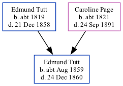

Edmund Thomas Tutt cAug 1859 - 1860
[ Home ] | [ Calendar ] | [ Surnames Index ] | [ Family History ]The child of Edmund Tutt (a sawyer) and Caroline Page (a laundress), Edmund Tutt, the great-great-uncle of <a href="I1.html">Nigel Horne</a>, was born in Dover, Kent, England <i>c.</i> Aug 1859<span class="citation">1,2</span> and baptized in Buckland, Kent, England on Feb 26, 1860.<p>He died on Dec 24, 1860 on George Street in Buckland<span class="citation">3,4</span> (hydrocephalus (water on the brain)) and was buried at St Andrew's Church, Buckland on Dec 30, 1860<span class="citation">5,6</span>.
Parents
- Edmund was born c. 1819
- Caroline Bromley was born c. 1821
Citations
- England & Wales births 1837-2006 - Findmypast
- England & Wales, FreeBMD Birth Index, 1837-1915 Online publication - Provo, UT, USA: The Generations Network, Inc., 2006.Original data - General Register Office. England and Wales Civil Registration Indexes. London, England: General Register Office. © Crown copyright. Published by permission of the Cont
- England & Wales deaths 1837-2007 - Findmypast
- England & Wales, FreeBMD Death Index: 1837-1915 Online publication - Provo, UT, USA: The Generations Network, Inc., 2006.Original data - General Register Office. England and Wales Civil Registration Indexes. London, England: General Register Office. © Crown copyright. Published by permission of the Cont
- Kent, Canterbury Archdeaconry Burials - Findmypast
- England Deaths & Burials 1538-1991 - Findmypast
Media
Kent, Canterbury Archdeaconry burials - GBPRS/CANT/D/95310656
England & Wales births 1837-2006 - BMD/B/1859/3/PZ/000851/006
Kent Baptisms - GBPRS/CANT/B/96232545
England Births & Baptisms 1538-1975 - R_885824714
England Deaths & Burials 1538-1991 - R_276236715
England & Wales deaths 1837-2007 - BMD/D/1860/4/NZ/000750/024
Family Tree
Generated by Ged2Site. Last updated on Jul 20, 2025